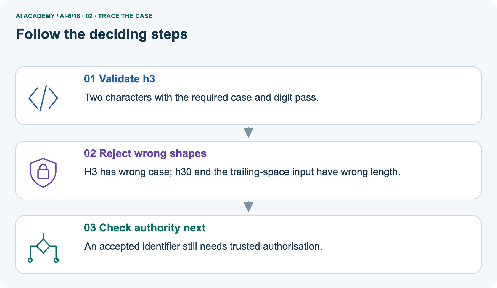
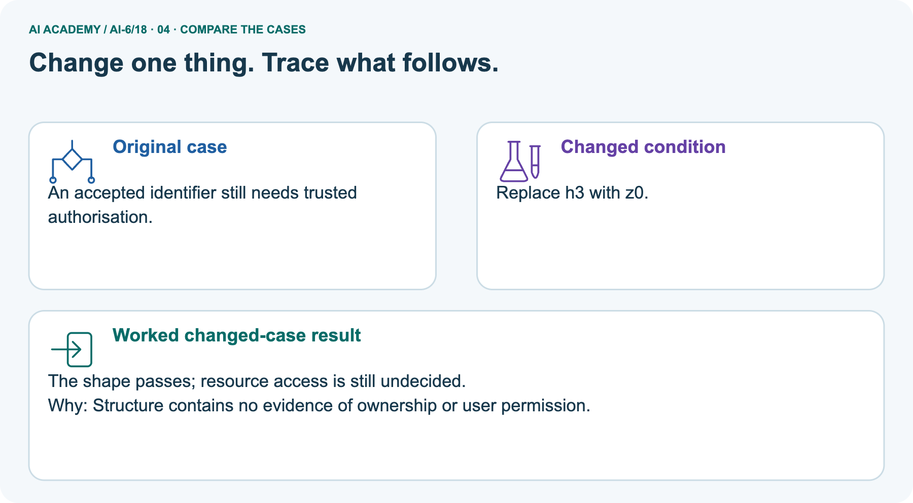
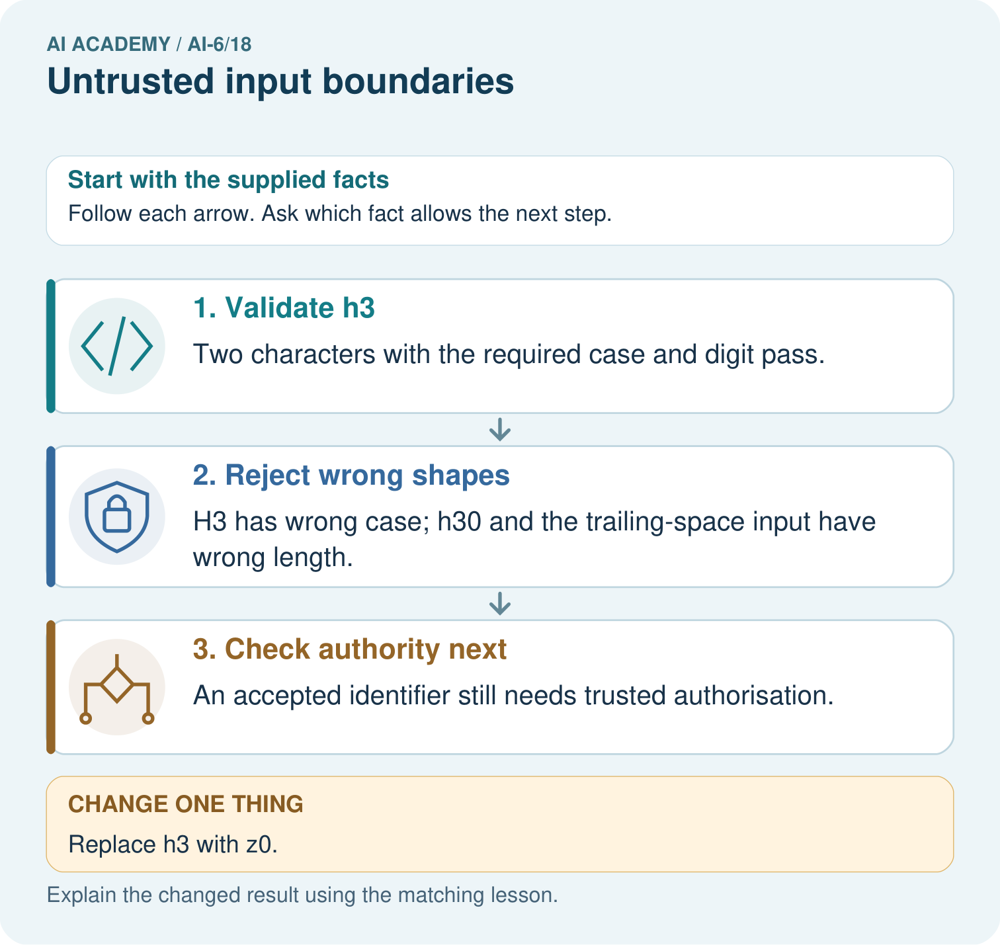
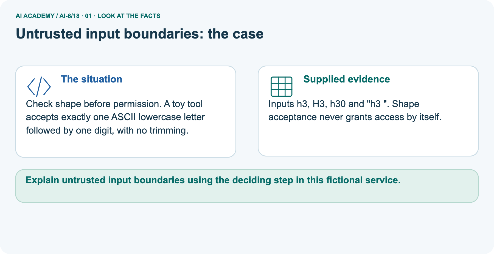
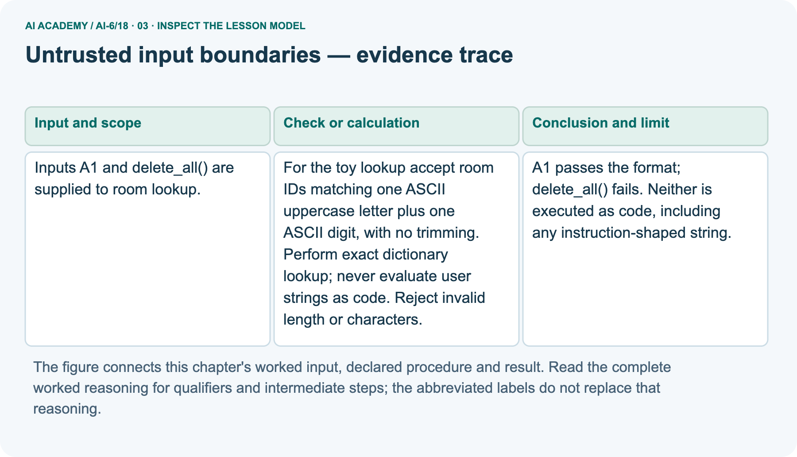
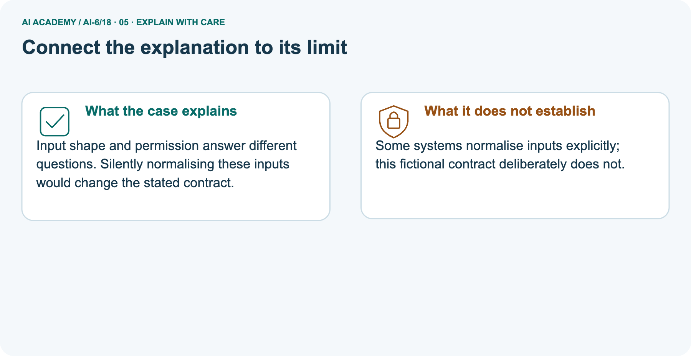
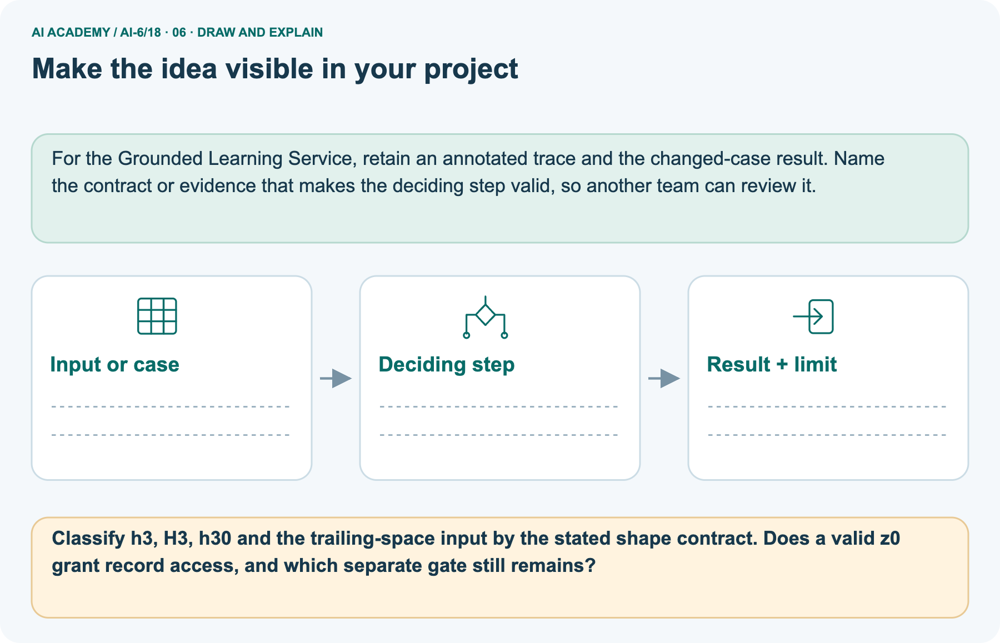

AI Academy · Level 6 · Grade 11 · Week 18 · Student lesson
Untrusted input boundaries
Learn to understand, design, build, test and explain AI systems responsibly.
Project: Grounded Learning Service
THE CONNECTED WEEK
Validate the whole input. Check trusted scope. Look up data, never execute it.
Apply exact ASCII input contracts while keeping format, authority, record existence and execution boundaries separate.
Keep one habit: Input/local-data contract → four gate paths → lowercase picture → full-match/type probes → executable dictionary audit → independent uppercase set.
Main lesson · Section 1
Keep input data from becoming instructions or permission
An accepted shape is only one gate on the way to a supported answer.
Learning goals
I can explain the mechanism and terminology of untrusted input boundaries.
I can apply the stated procedure to a new case with a traceable result.
I can identify an assumption or limitation and design a revealing follow-up.
Retrieve trusted evidence and recovery boundaries
Close your notes first. A rough first answer helps us choose the right starting point; it is not a score for your ability.
Without opening the old lesson, explain one key idea from External side effects and recovery. Give an example and a mistake that the idea helps you avoid.
Without opening the old lesson, explain one key idea from Approval gates and idempotency. Give an example and a mistake that the idea helps you avoid.
Without opening the old lesson, explain one key idea from Logs traces and privacy. Give an example and a mistake that the idea helps you avoid.
After trying, check the relevant lesson or ask your teacher. Change the part of your explanation that the evidence shows was wrong.
Prerequisite and starting response
Recall External side effects and recovery. Explain why a recorded result needs its input conditions and evidence source before it can support a claim.
End goal
Explain untrusted input boundaries using the deciding step in this fictional service.
Earlier wording, alternatives and picture transcripts
Your learning target
Remember before reading
This week you will practise:
Explain the mechanism and terminology of untrusted input boundaries
Apply the stated procedure to a new case with a traceable result
Identify an assumption or limitation and design a revealing follow-up
Retrieve what you already know
This week’s end goal
Main lesson · Section 2
Declare the exact input contract and the separate authority source
The added dictionary fixture makes the investigation complete without implying a real room record.
Begin with data, shape and access as different concepts
A room identifier is data. Even if a supplied string looks like a command, the lookup service must not run it as code. This exercise accepts exactly two ASCII characters: one uppercase letter and one digit. It does not trim spaces, change case or convert other types. After shape validation, the service still checks trusted access and looks up the exact key. A correct-looking identifier cannot authorize itself.
Define untrusted input boundaries
Untrusted input must be treated according to a contract before reaching code, queries or tools. Data that resembles instructions does not acquire execution authority.
Complete main contract and local lookup givens
| Main uppercase contract and local extension | Complete rule or fixture |
|---|---|
| Input type and shape | Exact Python str, whole input matching [A-Z][0-9] |
| Normalization | None: no trimming, case conversion or coercion |
| Trusted allowed IDs in the local extension | A1 and D4, supplied by the test harness |
| Local records | A1 has capacity 12/source ROOM-A1; B2 exists but is not in the allowed scope |
| Authorized but absent ID | D4 returns review after a permitted lookup |
| Response fields | Only status, room_id, capacity and source_id; record fields are checked |
| Instruction-shaped input | delete_all() fails shape; no input is evaluated as code |
| Observation | Lookup-call IDs and an unchanged source snapshot |
| Scope | Fictional records and trusted-scope fixtures, not real authentication or universal injection protection |
Name supplied and missing evidence
Earlier wording, alternatives and picture transcripts
Begin by writing the question the procedure is intended to answer. Identify the information already supplied, the information it will produce and the information still missing.
These are constructed classroom examples; they do not require live accounts, private records or an external service. Do not treat a plausible explanation as a measured outcome.
Main lesson · Section 3
Trace each gate without treating a string as control
A format pass, an authorization pass and an existing record establish different facts.
Original exact-room-ID and dictionary-lookup mechanism
For the toy lookup accept room IDs matching one ASCII uppercase letter plus one ASCII digit, with no trimming. Perform exact dictionary lookup; never evaluate user strings as code. Reject invalid length or characters.
Complete four-path local decision trace
Validate shape, then authorize, then look up data
State the contract before checking
Before applying the procedure, write its units, denominator or decision boundary where relevant. A partner should be able to repeat each step using the same inputs.
If a required input is absent or violates the stated contract, record that condition explicitly instead of quietly replacing it with a convenient value.
Explain the visual
Point to the input, the deciding step and the result in this week’s visual. Explain the same step in ordinary words. A picture helps when you can say what each part represents.
Earlier wording, alternatives and picture transcripts
Untrusted input boundaries — evidence trace
Connect the picture and the explanation
Main lesson · Section 4
Change case or length while keeping the contract fixed
Do not silently normalize a failing value to make it pass.
Current task and response
Inputs A1 and delete_all() are supplied to room lookup. Show the intermediate steps and give the conclusion with its scope.
Predict the changed lowercase-picture identifier
Change: Replace h3 with z0.
Check after predicting
Prediction: The shape passes; resource access is still undecided.
Reason: Structure contains no evidence of ownership or user permission.
Earlier wording, alternatives and picture transcripts
Compare a familiar case with a changed case
Change one thing in the pictured case
Main lesson · Section 6
Compare two exact contracts without mixing their rules
A case change may affect shape acceptance while leaving authority unestablished.
Original main A1/instruction-string inputs and conclusion
Inputs A1 and delete_all() are supplied to room lookup.
A1 passes the format; delete_all() fails. Neither is executed as code, including any instruction-shaped string.
Keep policy-compliant diagnostic evidence
Compare the intermediate evidence with the final statement. Explain why each number or decision follows from the stated inputs. The conclusion belongs to this scenario and procedure; changing the inputs, evaluation population or authority can change what it establishes. Retain a policy-compliant diagnostic record of the outcome so a later revision can be compared honestly.
Separate pictured lowercase rule and complete inputs
Check shape before permission. A toy tool accepts exactly one ASCII lowercase letter followed by one ASCII digit, with no trimming.
Inputs h3, H3, h30 and "h3 ". Shape acceptance never grants access by itself.
The main contract is uppercase [A-Z][0-9]. The picture is a separate lowercase [a-z][0-9] contract, also with no trimming. Under that pictured contract h3 passes; H3 has the wrong case; h30 has an extra character; "h3 " has a trailing space. The changed z0 passes shape but still needs trusted authorization.
Do not apply the main uppercase rule to the picture or treat either shape result as permission to read a record.
Trace exact case, length and access distinction



Read the picture one step at a time
Input shape and permission answer different questions. Silently normalising these inputs would change the stated contract.
Predict replacing h3 with z0
Change one thing: Replace h3 with z0. Predict the result before checking the explanation. What remains the same?
Check after predicting



Explain accepted shape and separate permission gate
Some systems normalise inputs explicitly; this fictional contract deliberately does not.
Read the labelled picture: Classify h3, H3, h30 and the trailing-space input by the stated shape contract. Does a valid z0 grant record access, and which separate gate still remains?
Reference: original main format-only helper
Optional local lab: predict the printed result before running this standalone Python 3 example. Change one relevant boundary input, record the outcome and state the contract or statistical assumptions.
The program uses fictional values and the Python standard library; it performs no external operations.
import re
def validate_identifier(value):
return type(value) is str and re.fullmatch('[A-Z][0-9]', value) is not None
print(validate_identifier("B2"))Earlier wording, alternatives and picture transcripts
Learn from the worked case
Cover the result before checking it. Say what is given, choose the procedure, and follow one step at a time. Then uncover the result and explain your first mismatch. Ask why a step is allowed, not only what number it produces.
A pictorial worked case: Untrusted input boundaries
The facts we will use



Why this result follows
What this example does not establish
Main lesson · Section 7
Test full-match boundaries and the next required gate
A format check cannot grant resource access or validate all later components.
Core format-versus-access qualification
A format check does not grant resource access; authorisation follows separately.
A useful check asks what would make the reasoning fail. Distinguish a failure to execute the declared procedure from a weakness in the procedure itself.
The first may require a correction; the second requires an explicitly revised method and new evidence. Preserve unsuccessful cases so an improved result cannot hide the original problem.
Complete case, Unicode, missing-type and access probes
| Input or boundary probe | Expected interpretation |
|---|---|
| A1 under the main contract | Shape passes; only separate trusted scope and record evidence permit the example answer |
| a1, A11 or A1 with trailing space/newline | Main whole-input shape fails; do not trim or change case |
| Fullwidth characters or a non-ASCII digit | Do not match the declared ASCII ranges |
| None or another non-string type | Fail before regex matching; no implicit conversion |
| delete_all() | Instruction-shaped data fails the format and is never executed |
| Valid B2 outside trusted scope | Deny before lookup, even if a fixture record exists |
| Valid authorized D4 with no record | Review after lookup, without inventing content |
| Lowercase-picture z0 | Shape only; authority remains a separate question |
| All these local probes pass | No proof that every query, shell, model or deployed input boundary is protected |
Guided explanation and repair
A report omits this qualification: A format check does not grant resource access; authorisation follows separately. Explain how omitting it could change a reader's interpretation, and write an accurate replacement.
Earlier wording, alternatives and picture transcripts
Locate the earliest unsupported step
Main lesson · Section 8
Practise the exact failed condition and its consequence
Say shape, permission or missing evidence rather than simply good/bad input.
Current explanation and guided scope check
Explain the weekly mechanism in your own words. Use the worked scenario to name its input, decision rule and output.
Supported W2 record
Use workbook W2 for the connected example “Untrusted input boundaries”. First fill the input and rule boxes. Try the middle steps before asking for a hint. After a hint, try the next step yourself.
| Plan | Do | Check |
|---|---|---|
| What is given? Which rule or procedure applies? | Record each intermediate step. | Does the result follow? What remains unknown? |
Explain your trace to a partner. Your partner points to one step to check. Swap roles on the next case. Each person writes their own explanation.
Individual access-limit check
Use the worked case for Untrusted input boundaries. Proposed explanation: “The worked result establishes every future case”. Decide whether this explanation is supported.
Point to the step or supplied fact that decides; explain your repair if needed.
Answer on your own before discussion. If you are unsure, say which step you need help with.
Lowercase-picture response
Classify h3, H3, h30 and the trailing-space input by the stated shape contract. Does a valid z0 grant record access, and which separate gate still remains?
Reserve the selected new C0 input set
This is supported practice. Keep the separately named independent case for an attempt before feedback.
Earlier wording, alternatives and picture transcripts
Practise with less help: Trace the worked case
Check your reasoning
Explain the picture
Main lesson · Section 9
Run a complete shape, authorization and unchanged-data audit
Record the gate outcome and whether a lookup occurred, not just the final response.
Current A1/instruction-shaped-input investigation
Inputs A1 and delete_all() are supplied to room lookup. Show the intermediate steps and give the conclusion with its scope.
Complete runnable exact-match and local lookup checks
"""Exact ASCII identifier contracts and local read-only dictionary lookup."""
import re
from copy import deepcopy
def valid_room_id(value):
return type(value) is str and re.fullmatch(r'[A-Z][0-9]',value) is not None
def valid_picture_id(value):
return type(value) is str and re.fullmatch(r'[a-z][0-9]',value) is not None
RECORDS={'A1':{'capacity':12,'source_id':'ROOM-A1'},
'B2':{'capacity':7,'source_id':'ROOM-B2'}}
TRUSTED_ALLOWED=frozenset({'A1','D4'})
def lookup(value,allowed,records,calls):
if not valid_room_id(value):return {'status':'invalid_input'}
if value not in allowed:return {'status':'denied'}
calls.append(value) # local fixture lookup trace, not a network call
record=records.get(value)
if record is None:return {'status':'review','reason':'missing approved record'}
if (type(record) is not dict or set(record)!={'capacity','source_id'} or type(record.get('capacity')) is not int
or record['capacity']<0 or type(record.get('source_id')) is not str or not record['source_id']):
return {'status':'review','reason':'invalid record fields'}
return {'status':'answered','room_id':value,'capacity':record['capacity'],'source_id':record['source_id']}
before=deepcopy(RECORDS);calls=[]
normal=lookup('A1',TRUSTED_ALLOWED,RECORDS,calls)
rejected=lookup('delete_all()',TRUSTED_ALLOWED,RECORDS,calls)
denied=lookup('B2',TRUSTED_ALLOWED,RECORDS,calls)
missing=lookup('D4',TRUSTED_ALLOWED,RECORDS,calls)
assert normal=={'status':'answered','room_id':'A1','capacity':12,'source_id':'ROOM-A1'}
assert rejected=={'status':'invalid_input'} and denied=={'status':'denied'}
assert missing['status']=='review' and calls==['A1','D4'] and RECORDS==before
print('Main allowed/invalid/denied/missing fixtures:',normal,rejected,denied,missing)
print('Actual local lookup IDs:',calls,'records unchanged:',RECORDS==before)
# Do not trim, change case, coerce values or execute instruction-shaped data.
values=['A1','a1','A11','A1 ','A1\n','Ａ１','A١','delete_all()',None]
for value in values:print('Main shape fixture:',repr(value),valid_room_id(value))
assert [valid_room_id(v) for v in values]==[True,False,False,False,False,False,False,False,False]
# Separate pictured contract is lowercase, not the main uppercase contract.
picture=['h3','H3','h30','h3 ','z0']
assert [valid_picture_id(v) for v in picture]==[True,False,False,False,True]
print('Separate picture shapes:',[(repr(v),valid_picture_id(v)) for v in picture])
print('A valid shape does not grant access. No evaluation of input as code, SQL, shell or model instruction occurs.')
print('Trusted scope is a classroom fixture, not real authentication; these checks do not prove every injection boundary is protected.')
Expected gate outcomes, visible whitespace and limits
Predict all four local outcomes and the lookup-call list before running or tracing. Only A1 and D4 reach fixture lookup; instruction-shaped text fails input shape and B2 is denied before lookup. The source snapshot stays unchanged. Additional supplied shape fixtures test case, length, trailing whitespace/newline, fullwidth characters, a non-ASCII digit and None.
Their repr output makes whitespace visible without evaluating any input as code. The picture’s lowercase checker is separate and performs no resource access. The program reads no real records, authenticates no user, evaluates no code/query/shell string and makes no model or network call. Keep actual private inputs out of this fixture exercise.
Evidence ledger and reflection
| Record | Your evidence |
|---|---|
| Given input and fixed rule | |
| Prediction before checking | |
| Actual result, or “not run” | |
| First mismatch and one explanation | |
| Boundary or missing input and expected response |
On paper, trace the supplied procedure. If code is provided, predict before running it in a local practice file. Never write an expected answer as though it were an observed run.
Before trying: what do I expect, and why? While trying: which step could first go wrong? Afterwards: what did I actually observe, and what should change? Keep “not run” if you only traced the procedure.
Reference: original format-only snippet
import re
def validate_identifier(value):
return type(value) is str and re.fullmatch('[A-Z][0-9]', value) is not None
print(validate_identifier("B2"))Earlier wording, alternatives and picture transcripts
Predict, investigate and preserve the evidence
Plan → try → check
Main lesson · Section 14
Try alone: apply the new uppercase C0 input set
Use only the stated shape contract and explain why it cannot grant permission.
Complete selected independent uppercase/no-trim task
Input format is exactly one ASCII uppercase letter followed by one digit, with no trimming. Evaluate C0, c0, C00, "C0 ", and None. Does a valid format grant access?
First attempt and support record
Attempt this case before feedback. Record any help. Earlier examples below are further practice; a case already practised with feedback cannot establish fresh transfer.
Feedback after trying
Attempt the independent case before hints. Record whether you worked alone, used a hint or followed a model. After feedback, fix the first unsupported step and explain why it changed.
A later check uses a changed case, not a copied answer.
Earlier wording, alternatives and picture transcripts
Independent case: Changed independent case
Attempt this without hints
Classify B2, b2, B22 and B2; DROP under the exact format.
Record support used: none, hint or teacher explanation. After feedback, a different case is needed to demonstrate independence.
Use feedback to improve
Main lesson · Section 11
Save exact input grammar beside scope and lookup assertions
Retain rejected fixture cases and policy-compliant diagnostic outcomes.
Project task and artifact
Add a labelled untrusted input boundaries evidence sheet to Grounded Learning Service. Show how you can explain the mechanism and terminology of untrusted input boundaries.
Use the supplied fictional case and keep its inputs, intermediate steps, calculation or prediction, and limitation. Connect this record to last week’s record; a matching answer without a trace is insufficient.
| Project evidence | Record |
|---|---|
| Component and version | |
| Inputs permitted at prediction time | |
| Trace and comparison with earlier work | |
| Failure, limit and human review |
Actual run or trace and limitations
For the Grounded Learning Service, retain an annotated trace and the changed-case result. Name the contract or evidence that makes the deciding step valid, so another team can review it.
Earlier wording, alternatives and picture transcripts
Evidence for your project
Main lesson · Section 16
Finish with a precise contract and a separate authority check
Data that looks like a command or valid identifier does not become control.
Retrieve and explain
Close your notes. Explain this goal in your own words: Explain the mechanism and terminology of untrusted input boundaries
Plan a changed-case return
If you are unsure, return to the worked picture and explain one arrow. If you are ready, change an input or assumption and justify your prediction.
Save your workbook evidence. At the next review, try a different case before opening your old answer.
Reference bank and extra practice
Choose the reference that helps your next step.
Reference · Use service vocabulary precisely
Reference · Section 5
Reference · Use service vocabulary precisely
Connect each term to an input, operation, evidence source or outcome.
Vocabulary and your explanation
| Word | Meaning |
|---|---|
| Untrusted input | Data whose claims or control intent have not been authorised |
| Full match | Validation covering the whole input |
| Injection boundary | A separation preventing data from becoming executable control |
Extra challenge · Explain a stronger case
Reference · Section 10
Extra challenge · Explain a stronger case
Choose the next challenge after the main route.
Explain,repair and extend
Explain the weekly mechanism in your own words. Use the worked scenario to name its input, decision rule and output.
A report omits this qualification: A format check does not grant resource access; authorisation follows separately. Explain how omitting it could change a reader's interpretation, and write an accurate replacement.
For the worked scenario, propose one additional case that could reveal a failure, describe its expected outcome before running it, and explain what would need to remain fixed for a fair comparison.
Do not reuse W4 as a new final test after receiving feedback.
Explain → apply → challenge
Reference · Check the service reasoning and its limits
Reference · Section 12
Reference · Check the service reasoning and its limits
Use after practice; keep the selected independent case for its first attempt.
Current explanation and response
Complete the supported workbook tasks before attempting W4 independently. Record any hints or help used. After feedback, use the teacher's fresh retry rather than copying the earlier answer.
For a project, select a relevant new case, predict the outcome from the declared rule and preserve the result alongside any revision.
For the worked scenario, propose one additional case that could reveal a failure, describe its expected outcome before running it, and explain what would need to remain fixed for a fair comparison.
Do not reuse W4 as a new final test after receiving feedback.
Extra practice · Revisit the complete trace
Reference · Section 13
Extra practice · Revisit the complete trace
Predict before reading the supplied steps.
Complete trace and evidence
Complete evidence record
Untrusted input boundaries — evidence trace
Follow the input through the stated procedure to its result. Cover the result first, predict it, then explain every intermediate step. The text/table accompanies the figure so the example can be read without colour.
Reference · The earlier route checklist
Reference · Section 15
Reference · The earlier route checklist
Use one main route rather than repeating the lesson.
Targets,route and first prediction
Start with this question: Check shape before permission. A toy tool accepts exactly one ASCII lowercase letter followed by one ASCII digit, with no trimming.
| By the end, I can | How I will show it |
|---|---|
| Explain the mechanism and terminology of untrusted input boundaries | Explain the deciding step, show a trace or test, and state one limit. |
| Apply the stated procedure to a new case with a traceable result | Explain the deciding step, show a trace or test, and state one limit. |
| Identify an assumption or limitation and design a revealing follow-up | Explain the deciding step, show a trace or test, and state one limit. |
Remember → watch and explain → try with help → investigate → try independently → keep project evidence. Your teacher may spread this lesson across several classes.
Keep your first prediction. Compare it with what the evidence shows and explain any change.
Extra practice · Predict,check and repair
Reference · Section 17
Extra practice · Predict,check and repair
Keep supported feedback separate from the independent case.
First supported question and optional hint
Check shape before permission. A toy tool accepts exactly one ASCII lowercase letter followed by one ASCII digit, with no trimming.
Which labelled step matches this detail? An accepted identifier still needs trusted authorisation.
1. Reject wrong shapes
2. Check authority next
3. Validate h3
Hint if needed: Read the steps in the pictorial case. Match the supplied detail to the stage that performs or records it.
Practice 1: explain the deciding evidence
Check after the first attempt
After your attempt, compare with the supported explanation: Check authority next An accepted identifier still needs trusted authorisation. Input shape and permission answer different questions.
Silently normalising these inputs would change the stated contract.
Changed-case question and optional hint
Changed-case practice: Replace h3 with z0. Which conclusion is supported by the supplied facts?
1. We can decide the result without examining the changed input or the procedure.
2. The shape passes; resource access is still undecided.
3. This one example guarantees correct results for every future input.
Hint if needed: Use the changed condition and the deciding step in the pictorial trace. The answer must say what follows from those facts.
Practice 2: explain the deciding evidence
Check after the changed attempt
After your attempt, compare with the supported explanation: The shape passes; resource access is still undecided. Structure contains no evidence of ownership or user permission.
Repair and retain the record
Review External side effects and recovery (ai-6/17). Goal: Explain the mechanism and terminology of external side effects and recovery. Short practice: Distinguish a missing printer acknowledgement from confirmed failure.
What should happen if J6 is complete, and what evidence changes when J6 is reliably reported absent?. Return to this week and explain what you changed.
Review Approval gates and idempotency (ai-6/15). Goal: Explain the mechanism and terminology of approval gates and idempotency. Short practice: Trace the two deliveries of approved K9.
How many reservations should occur, and why can a new K10 for desk 5 not borrow K9’s approval?. Return to this week and explain what you changed.
Review Logs traces and privacy (ai-6/12). Goal: Explain the mechanism and terminology of logs traces and privacy. Short practice: Identify the purpose of R17, C8 and 240 ms in the trace.
Which field is deliberately omitted, and why would logging the whole question violate this design?. Return to this week and explain what you changed.
The browser lab lets you edit the supported Python examples already included in this lesson. Predict first, run, inspect the actual output or error, change one input, then run again.
Keep code, predictions, actual results and a reasoned revision together. On paper, label your result as a trace rather than an execution.
Use Download completed work in the hosted lesson to export your answers, reflections, practice feedback and code-run evidence. Open the HTML copy to read or print it.
Drafts stay in this browser when storage is available; clear drafts on a shared device.
Earlier wording, alternatives and picture transcripts
Use this supported practice once, in the browser or on paper. Keep the reserved independent assessment for a separate first attempt before teacher feedback.
Repair a missing building block
Predict, run and debug
Keep your completed work
Reference · Six-picture concept journey
Reference · Section 18
Reference · Six-picture concept journey
Choose the picture that supports the current explanation.
01. Untrusted input boundaries: the case



Check shape before permission. A toy tool accepts exactly one ASCII lowercase letter followed by one ASCII digit, with no trimming. Supplied facts: Inputs h3, H3, h30 and "h3 ". Shape acceptance never grants access by itself.
Point to the given fact that matters most. Explain why it matters.
02. Follow the deciding steps
Validate h3: Two characters with the required case and digit pass. → Reject wrong shapes: H3 has wrong case; h30 and the trailing-space input have wrong length. → Check authority next: An accepted identifier still needs trusted authorisation.
Point to each numbered stage and explain which recorded input it uses.
03. Untrusted input boundaries — evidence trace



Untrusted input boundaries — evidence trace. Inputs A1 and delete_all() are supplied to room lookup. | For the toy lookup accept room IDs matching one ASCII uppercase letter plus one ASCII digit, with no trimming. Perform exact dictionary lookup; never evaluate user strings as code. Reject invalid length or characters. | A1 passes the format; delete_all() fails. Neither is executed as code, including any instruction-shaped string.
Read the labels and values. Explain the relationship the model shows.
04. Change one thing. Trace what follows.
Original case: An accepted identifier still needs trusted authorisation. Changed condition: Replace h3 with z0. Expected result: The shape passes; resource access is still undecided.
Reason: Structure contains no evidence of ownership or user permission.
Predict before checking the worked changed-case result. Name what changed and what the supplied facts allow you to conclude.
05. Connect the explanation to its limit



Input shape and permission answer different questions. Silently normalising these inputs would change the stated contract. Limit: Some systems normalise inputs explicitly; this fictional contract deliberately does not.
Explain the case, then point to a limit on the claim.
06. Make the idea visible in your project



For the Grounded Learning Service, retain an annotated trace and the changed-case result. Name the contract or evidence that makes the deciding step valid, so another team can review it.
Draw your input, deciding step, result and limit. Supported question: Classify h3, H3, h30 and the trailing-space input by the stated shape contract. Does a valid z0 grant record access, and which separate gate still remains?
Draw your project trace and justify the deciding step using evidence.